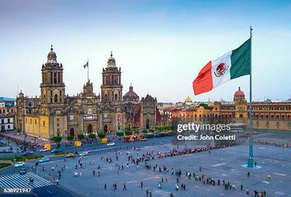
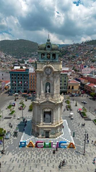

Bienvenido a nuestro portal interactivo dedicado a preservar y difundir las raíces, el arte, los íconos y los momentos históricos que definen la identidad del pueblo mexicano.
Utiliza el menú de navegación en la parte superior para explorar cada una de nuestras secciones temáticas: desde el movimiento de Independencia y los grandes logros científicos y artísticos de México, hasta nuestra riqueza musical, deportiva, televisiva y cinematográfica.

Ciudad de México

Hidalgo
Yucatán
Nuevo Leon